Kompendium: Geografisk IT og kunstig intelligens
IS-930 Introduksjon til Geografisk IT og Kunstig Intelligens · Universitetet i Agder · høst 2026
Forord og slik bruker du kompendiet
Dette kompendiet samler stoffet fra emnets Canvas-sider (Modul 0–2) i én sammenhengende tekst. Der Canvas følger samlingene, er kompendiet ordnet etter tema: først hvorfor og hva geografiske data er, så hvordan de visualiseres, hvor de kommer fra, hvordan de lagres og deles, hvordan de behandles, og til slutt hvordan verktøy, arkitektur og KI-agenter settes sammen til løsninger.
Hovedkilden er Canvas-sidene. Der kompendiet går utover dem, er teksten merket slik:
Grå demo-bokser peker til de interaktive demoene i dette repoet. Blå kort sagt-bokser oppsummerer hvert kapittel. Til slutt finnes en ordliste og en samlet litteraturliste. Kompendiet dekker modul 0–2; modul 3 (Analyse og KI, 17. november) har ikke innhold i Canvas-kopien ennå og er derfor ikke med, bortsett fra det som allerede står om KI-agenter.
Siden er laget for å kunne skrives ut (Ctrl/Cmd+P): innholdsfortegnelsen skjules og hvert kapittel starter på ny side. Lærebok i emnet er Rød, J. K. (2023): GIS – Verktøy for å forstå verden, 2. utgave, Fagbokforlaget.
1. Hvorfor geografiske data og visualisering?
- Nesten alt vi måler skjer et sted. Med posisjon blir mønstre, sammenhenger og avvik synlige som tabeller skjuler.
- Samme data kan se helt ulike ut avhengig av representasjonen, og kartet kan avsløre mer enn tiltenkt (personvern, sikkerhet).
- Fravær av data er også informasjon, men først når data vises i tid og rom.
Kartvisualisering gjør data tilgjengelig for visuell og umiddelbar analyse. Fire eksempler fra undervisningen viser hvorfor:
1.1 Data versus kartvisualisering
Et datasett med 59 punkter vist som tabell er nesten umulig å tolke: koordinatene er bare tekst og tall. Vist på kart danner punktene tydelig en smiley. Ingenting i dataene er endret, bare representasjonen. Lærdommen er at tabeller skjuler romlige mønstre, mens kartet utnytter det menneskelige synet.
smiley.geojson) som WKT-tabell som kan «snus» til kart.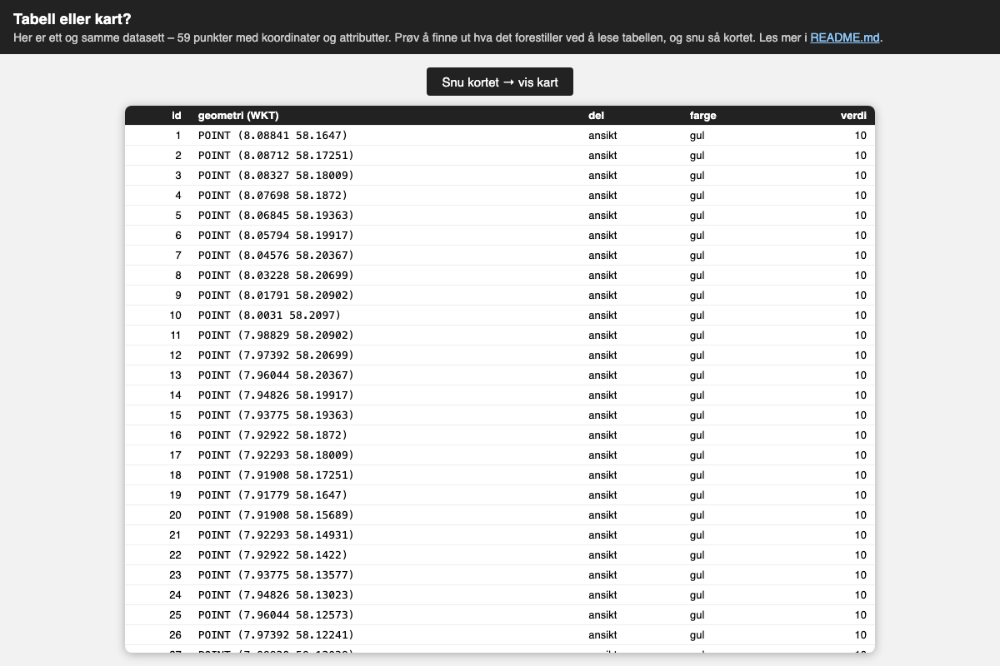
a) Som tabell: koordinater som tekst.
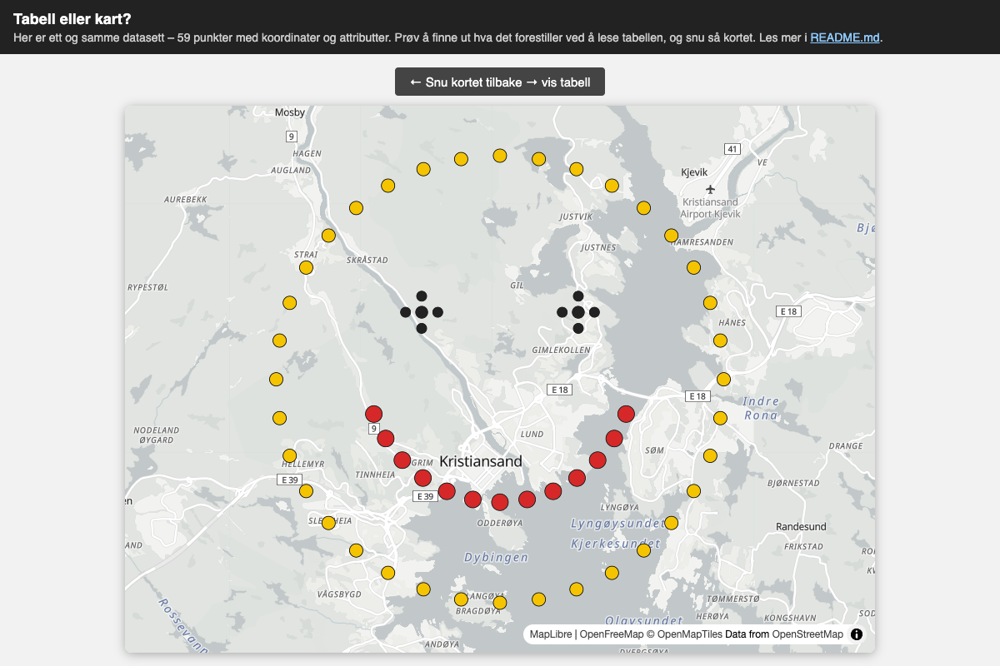
b) Som kart: punktene danner en smiley.
1.2 New York Times: The Privacy Project
Journalister fikk en datafil med over 50 milliarder posisjonsmålinger fra mer enn 12 millioner amerikanske mobiltelefoner. Dataene var «anonyme», men når de vises som bevegelige prikker er det enkelt å knytte bevegelsesmønstre til enkeltpersoner. Presis posisjon er sensitiv informasjon, og kart gjør dette tydelig.
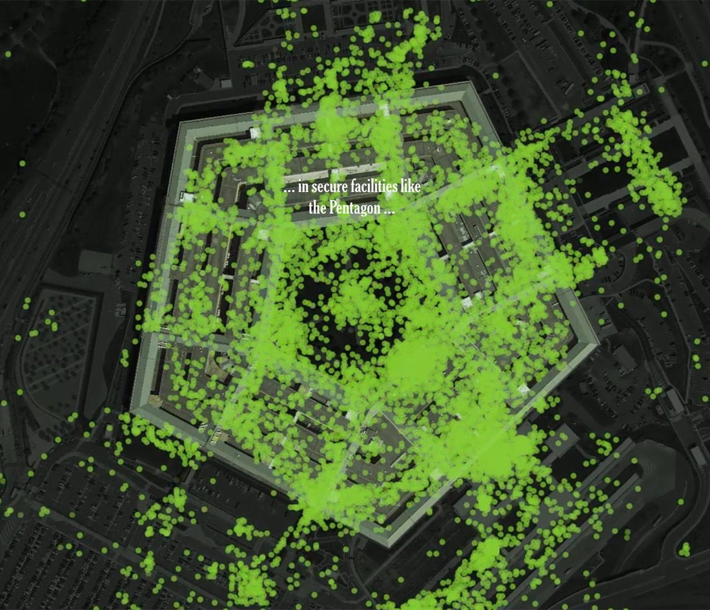
1.3 Strava og militærbaser
Strava publiserte et globalt «heatmap» over brukernes løpe- og sykkelruter. I områder der få bruker appen, som Syria og Afghanistan, lyste utenlandske militærbaser opp, og man kunne se ruter inne på basene. Dataene var aggregerte og anonymiserte, men visualiseringen avslørte likevel sensitiv informasjon. Spørsmål å diskutere: hvem eier dataene, hvem kan se dem, og hvem har ansvaret når en visualisering avslører mer enn tiltenkt?
1.4 AIS-data: fiskebåt som slår av AIS
AIS er sendere skip bruker til å melde posisjon, fart og kurs. I en animasjon av signalene time for time vises det som et hull i sporet når en fiskebåt slår av AIS. Fraværet av data forteller noe, men først når data vises i tid og rom.
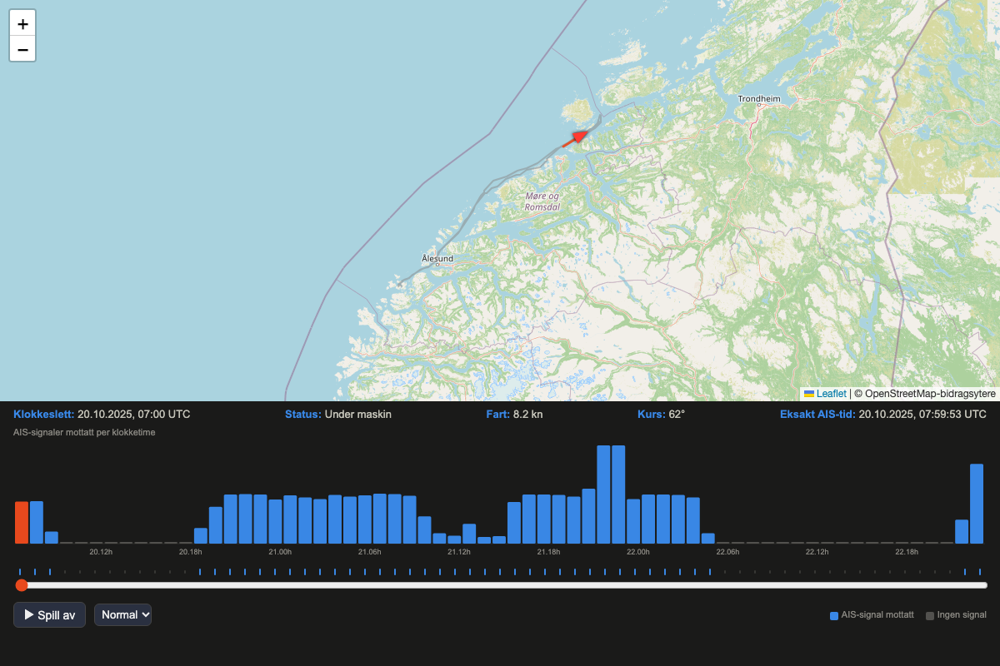
Refleksjon
- Hvilke data i din virksomhet egner seg for visualisering?
- Spill av AIS-animasjonen: når og hvor forsvinner signalet, og hva kan årsaken være?
- Hvem har ansvaret når en visualisering avslører mer enn tiltenkt?
2. Grunnbegreper: koordinater, projeksjoner og datamodeller
- Jorden er en kule (nærmere en ellipsoide), kartet er flatt. En kartprojeksjon flytter posisjoner fra kule til flate, og ingen projeksjon bevarer både vinkler og areal.
- Et koordinatsystem (CRS) bestemmer hva tallene betyr. Feil CRS gir stille feil i alle senere beregninger.
- Vektor = punkter, linjer og flater med attributter. Raster = rutenett av celler med verdier.
- For norske data: bruk EUREF89 UTM (EPSG:25832/25833) når du måler i meter.
2.1 Projeksjoner og forvrengning
Å flytte posisjoner fra en kule til en flate gir uunngåelig forvrengning. Ingen projeksjon er «riktigere» enn andre, bare ulike kompromisser. Tissots indikatriks (små sirkler tegnet på kartet) viser hvordan en projeksjon forvrenger form og areal: sirkler som blir ellipser viser vinkel- og formforvrengning, sirkler som skifter størrelse viser arealforvrengning.
Egenskaper. Projeksjoner grupperes etter hva de bevarer: konforme (vinkler og lokale former, f.eks. Mercator), flatetro/likearealsprojeksjoner (areal, f.eks. Albers, Mollweide, Equal Earth) og kompromiss-projeksjoner (Robinson). Mercator forstørrer areal mot polene: Grønland ser større ut enn Sør-Amerika selv om det er omtrent en åttedel av størrelsen.
Web Mercator (EPSG:3857). Brukes av nesten alle nettkart og fliser (Google, OSM, Kartverkets fliser m.fl.). Den er en sfærisk variant som behandler WGS 84-koordinater som om de lå på en kule, og er dermed ikke strengt konform. Den dekker bare ca. ±85° bredde. Egner seg til visning, men ikke til arealberegning eller tematiske verdenskart. For arealbaserte tematiske kart (f.eks. folketall per km²) bør du bruke en flatetro projeksjon, og for verdenskart f.eks. Equal Earth eller Mollweide.
2.2 Koordinatsystemer
Et koordinatsystem (CRS, Coordinate Reference System) består av et datum (hvordan koordinatene er festet til jorden) og enten geografiske koordinater (grader) eller en projeksjon (meter). Viktige koder:
| EPSG | Navn | Enhet | Bruk |
|---|---|---|---|
| 4326 | WGS 84, lengde/bredde | grader | GPS, GeoJSON, utveksling. Ikke for avstand/areal. |
| 3857 | Web Mercator | meter | Visning i nettkart og fliser. |
| 25832 | EUREF89 UTM sone 32 | meter | Norske data, vest/sør (Agder ligger her). |
| 25833 | EUREF89 UTM sone 33 | meter | Norske data, brukt i emnets eksempeldata. |
Regelen fra operasjonskapittelet: avstander og arealer regnes i koordinatsystemets enhet. En buffer på «100» i EPSG:4326 betyr 100 grader, ikke 100 meter. Sjekk alltid CRS før du måler, og husk at GeoJSON bruker rekkefølgen [lengdegrad, breddegrad]. Blandet rekkefølge (x/y mot lat/lon) er en klassisk kilde til stille feil. Det gamle norske systemet NGO 1948 er erstattet av EUREF89 og UTM.
Kartverkets kodeliste bekrefter at EUREF89 UTM sone 32 er EPSG:25832 og sone 33 er EPSG:25833. For høyder brukes i dag høydesystemet NN2000, og det finnes sammensatte (compound) koder som kombinerer UTM og NN2000 (EPSG:5972 for sone 32 og 5973 for sone 33). EPSG-registeret har også norske varianter (ETRS89-NOR, f.eks. EPSG:11023) som kan avvike fra de generiske kodene med noen centimeter. For oppmåling bør du følge Kartverkets egne anbefalinger.
2.3 Geometritypene og datamodellen
Vektordata beskriver objekter med klare grenser som punkter (en bygning som posisjon), linjer (veier, vassdrag) og flater/polygoner (kommuner, eiendommer), alle med tilhørende attributter i en tabell. Raster er et rutenett av celler (piksler) med en verdi hver, og passer for kontinuerlige fenomener som satellittbilder, flyfoto og høydemodeller. Vanlige rasterformater er GeoTIFF og Cloud Optimized GeoTIFF (COG).
Geometritypene er definert i OGC-standarden Simple Features: Point, LineString, Polygon, samt samlingstypene MultiPoint, MultiLineString, MultiPolygon og GeometryCollection. Det er denne modellen ST_-funksjonene i spatial SQL bygger på. En gyldig polygon har bl.a. lukket ytre ring og ingen selvkryss; ugyldige geometrier (se kapittel 6) kan gi feil i operasjoner. For raster er oppløsning (cellestørrelse i meter) og antall bånd sentrale egenskaper.
- Geonorge: kodeliste for koordinatsystem
- epsg.io: EPSG:25833 og spatialreference.org: EPSG:5973
- Esri: Mercator
- Atlas GIS Basics: Mercator, UTM, Lambert
3. Kartografi og visualiseringsmetoder
- Metode, klasser og farger bestemmer hva kartet forteller. Velg metode ut fra datatypen.
- Choropleth for rater/tettheter, proporsjonale sirkler for totaler, dot density for konsentrasjon, kartogram når geografien kan forlates, heatmap for tetthetsflate.
- Fargeskala følger dataene: sekvensiell, divergerende eller kvalitativ. Unngå regnbue; test for fargesynsavvik.
3.1 Fem tematiske kartmetoder
| Metode | Hvordan | Passer for | Fallgruve |
|---|---|---|---|
| Choropleth | Flater farget etter klasser | Rater og tettheter (f.eks. innbyggere per km²) | Ikke for absolutte totaler: store flater dominerer visuelt |
| Proporsjonale sirkler | Sirkelens areal viser verdien | Totaler og mengder | Overlappende sirkler i tette områder |
| Dot density | Hver prikk = et fast antall enheter | Konsentrasjon og spredning | Prikkplassering innen flaten er tilfeldig, ikke faktisk |
| Kartogram (Dorling) | Geografien forlates, størrelsen viser verdien | Sammenligne enheter uavhengig av flatestørrelse | Stedsgjenkjenning svekkes |
| Heatmap | Glatt tetthetsflate (kernel density) fra punkter | Hvor punkter samler seg | Valg av radius/bånd påvirker bildet kraftig; kan lyse opp sensitive steder (jf. Strava) |
generer_eksempler.py.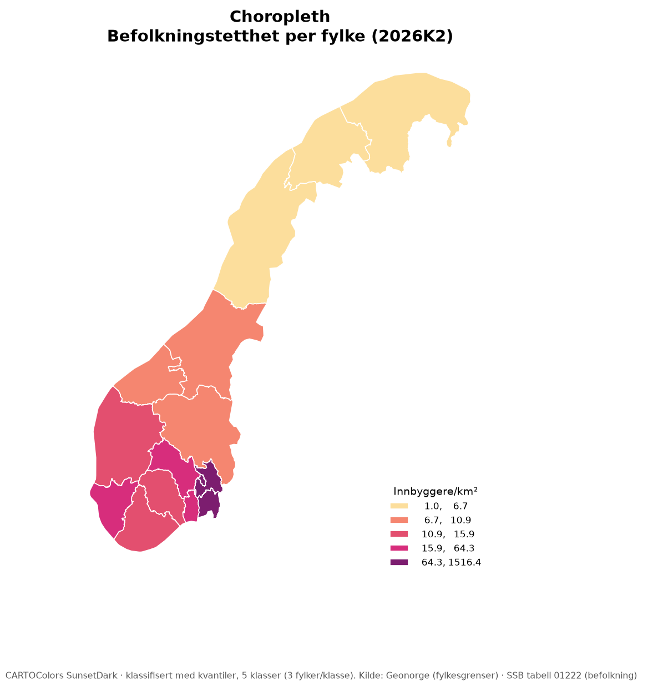
Choropleth: tetthet per fylke
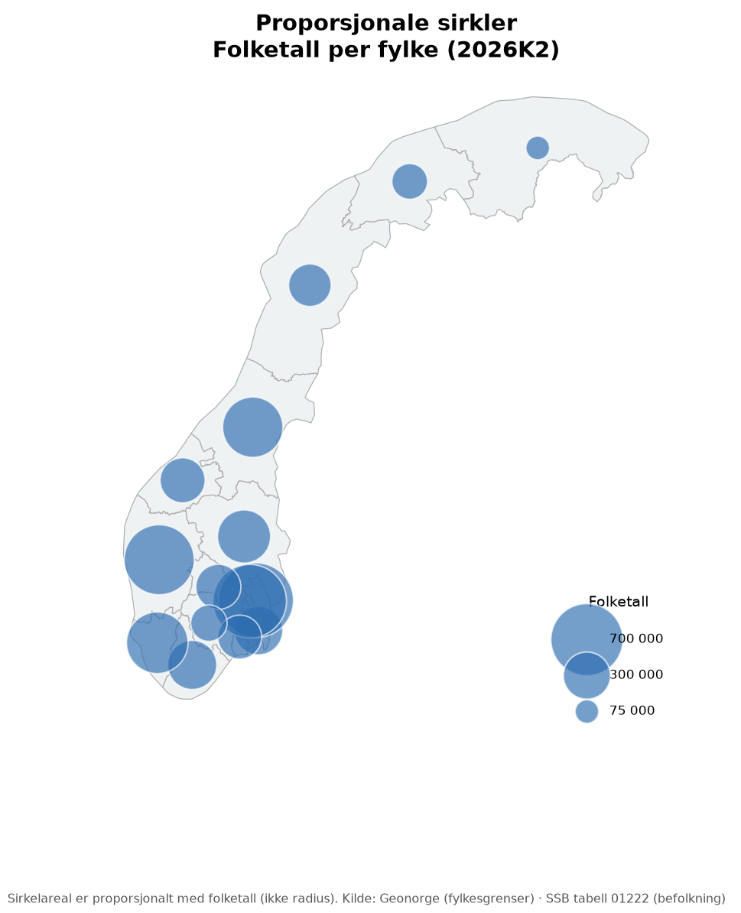
Proporsjonale sirkler: folketall
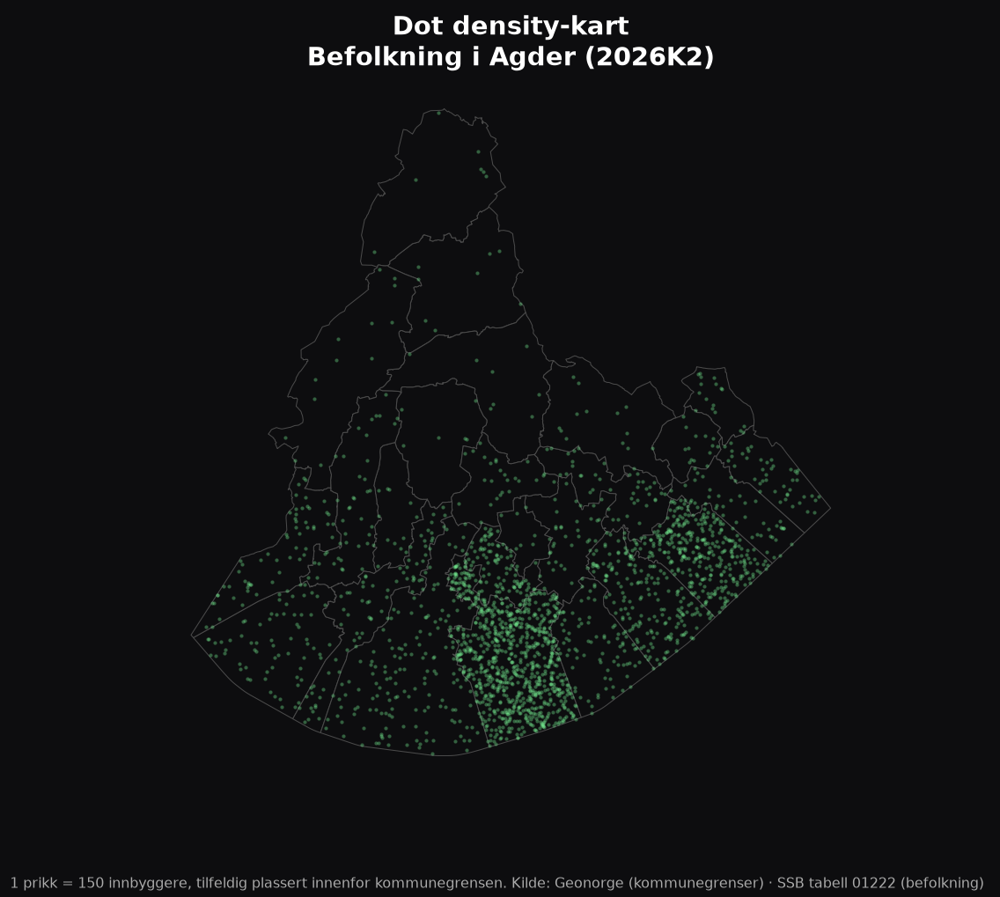
Dot density: Agder
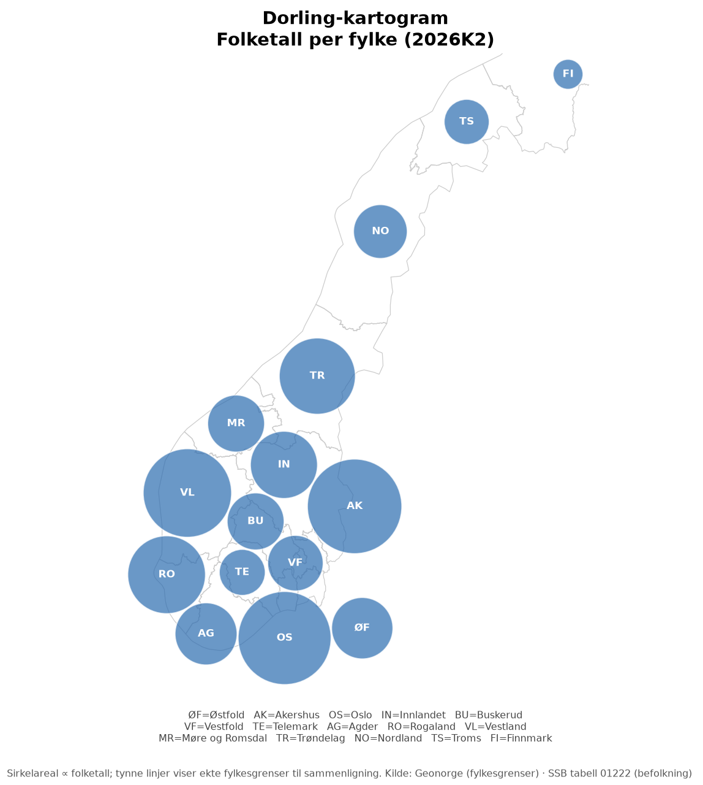
Kartogram (Dorling): folketall
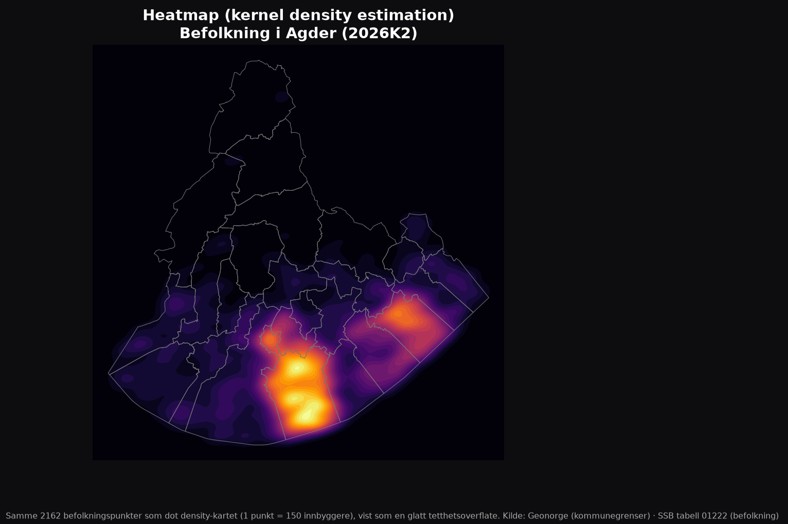
Heatmap: Agder (samme punkter som dot density)
3.2 Klassifisering
For choropleth må kontinuerlige verdier deles i klasser. Canvas stiller spørsmålet: hvorfor ville klassene sett annerledes ut med Jenks natural breaks enn med kvantiler?
- Like intervaller (equal interval): verdiområdet deles i like brede bånd. Lett å lese og viser absolutt størrelse, men gir nesten tomme eller overfylte klasser ved skjev fordeling.
- Kvantiler: like mange enheter i hver klasse. Bra for rangering, men to nesten like verdier kan havne i hver sin klasse, og en ekstremverdi kan grupperes med vanlige.
- Jenks natural breaks: algoritmen legger grensene der det er naturlige gap, ved å minimere varians innen klassene. Avslører grupperinger i dataene, men klassegrensene er spesifikke for datasettet, så kart er vanskelige å sammenligne.
God praksis: vis klassegrensene i tegnforklaringen og velg metode ut fra formålet.
3.3 Fargebruk
- Sekvensiell: ordnede verdier fra lav til høy (lys til mørk).
- Divergerende: avvik fra et meningsfullt midtpunkt (f.eks. endring, null eller gjennomsnitt).
- Kvalitativ: kategorier uten rekkefølge.
Verktøyet tar også opp hvor mange klasser leseren klarer å skille (typisk 5–7), hvorfor «regnbuen» er et dårlig valg (ikke perseptuelt jevn, ingen naturlig rekkefølge) og hvordan kartet kan fungere for dem med fargesynsavvik. Kjente kilder er ColorBrewer (Brewer og Harrower), CARTOColors, Viridis-familien (viridis, magma, inferno, plasma, cividis) og Okabe–Ito-paletten (åtte farger laget for å være skillbare ved vanlige fargesynsavvik).
Skill.md (se kapittel 15).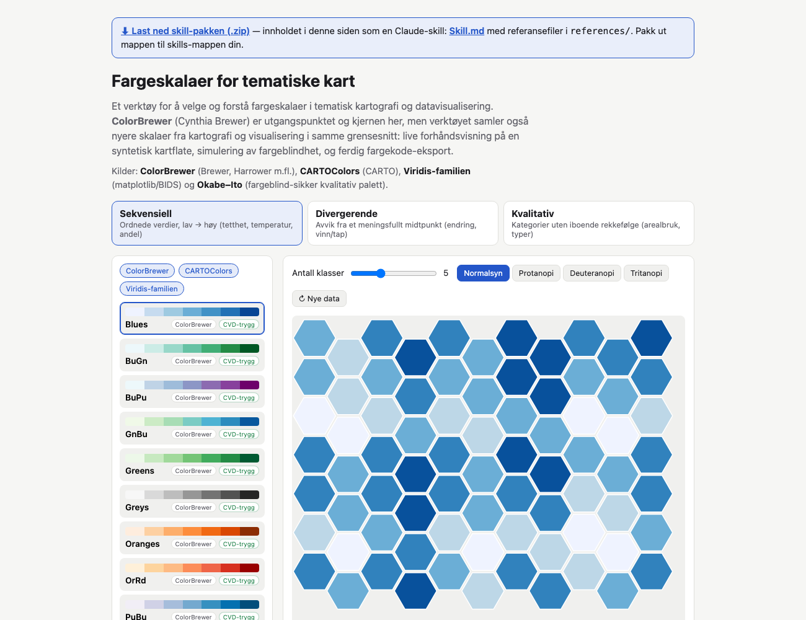
3.4 Bakgrunnskart er ikke nøytrale
Et bakgrunnskart er ferdig visualisert (raster) eller bygget av vektordata som nettleseren tegner (vector tiles). Detaljnivå, presisjon, kompletthet og stil varierer med hvem som har laget kartet. Se kapittel 5 for kilder.
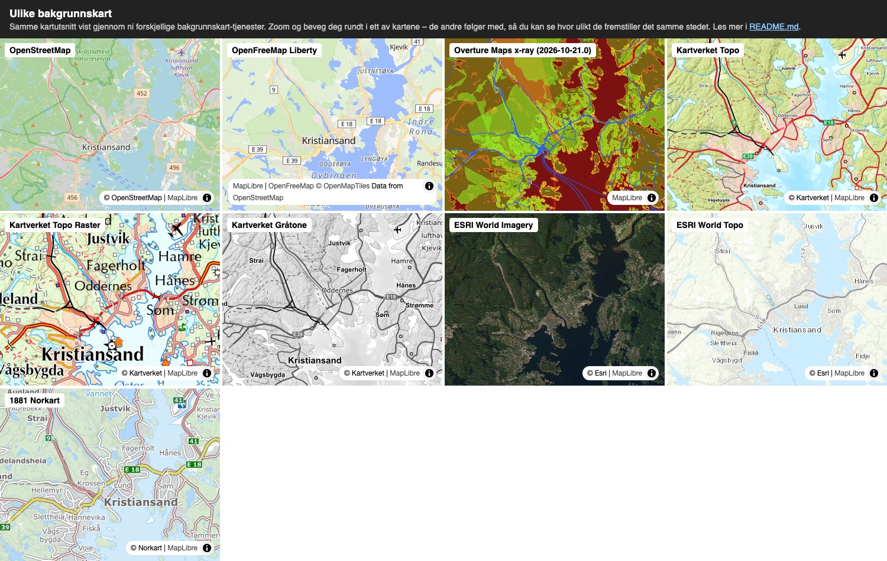
4. Norges geografiske økosystem
- Geodata produseres, forvaltes og deles gjennom samarbeid mellom stat, kommuner og private, styrt av lover og fellesløsninger.
- Kartverket står i midten. Sentrale samarbeid: Norge digitalt, Geovekst, Nasjonalt geodataråd.
- Å kjenne aktørene gjør det lettere å finne data, forstå opphavet og vite hvem som har ansvaret.
Kart og geografiske data kommer ikke av seg selv. Kartverket samler arbeidet på sin side om geodataarbeid. Følgende temaer er utgangspunktet:
- Nasjonalt geodataråd: bidrar til samarbeid om og bruk av geografisk informasjon, og følger opp nasjonale strategier for den felles digitale geografiske infrastrukturen.
- Norge digitalt: nasjonalt samarbeid om å skaffe, dele og bruke stedfestet informasjon.
- Geovekst: samarbeid om å etablere, forvalte og bruke geografisk informasjon. I tillegg til offentlige etater deltar Bane NOR, Fornybar Norge og Telenor.
- Fellesløsningene: digitale systemer for kart- og eiendomsinformasjon som Kartverket forvalter. Noen inngår i Norge digitalt, andre tilhører andre samarbeid.
- DOK og temadata: kartgrunnlag for kunnskapsbasert og effektiv planlegging og saksbehandling.
- Planarbeid: veiledning for kommuner og andre som lager og forvalter arealplaner.
I kapittel 5 og 6 ser vi konsekvensen i praksis: for eksempel er FKB-data (Felles kartdatabase, et Geovekst-produkt) tilgjengelig for Norge digitalt-parter, mens private kjøper via forhandler.
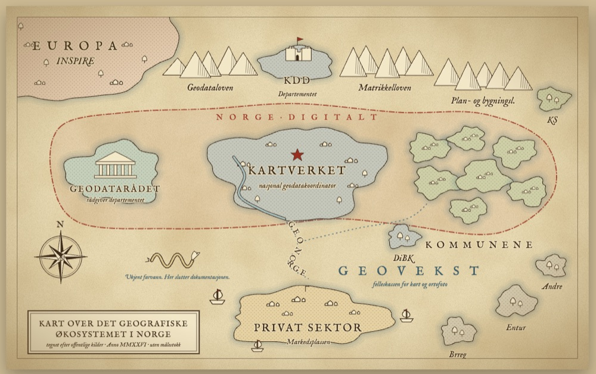
a) «Gamle kartet»: aktørene som landområder.
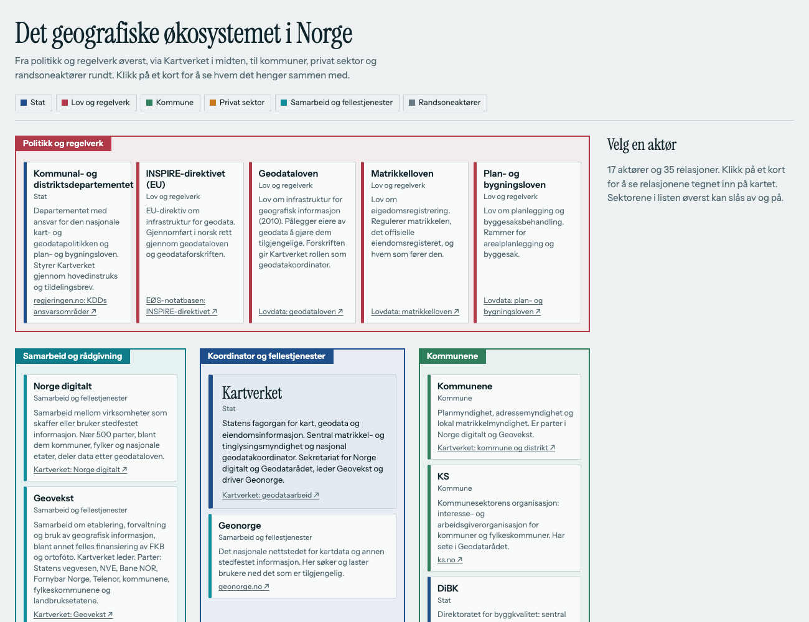
b) Soner og kort: politikk og regelverk øverst, Kartverket i midten.
Aktivitetsforslag
- Velg to aktører i kartet og beskriv relasjonen: regulering, penger eller data?
- Velg et datasett og finn produsent, forvalter og hvor det deles.
- Les Geodataplan for Agder og finn samarbeidspartnere i regionen.
5. Datakilder
- Hvilke data du bruker påvirker kvalitet, presisjon, kompletthet og hva du har lov til å gjøre.
- Bakgrunnskart = ferdig stilt, for orientering. Vektordata = geometri og attributter, for analyse og egen stil.
- Norske autoritative data: Geonorge. Globale åpne data: OpenStreetMap og Overture Maps. Statistikk: SSB.
- Det meste fra Kartverket er gratis; unntakene er hovedsakelig ortofoto og detaljerte data (FKB, lidar).
5.1 Bakgrunnskart
| Kilde | Pris / lisens | Levering | Bruk når |
|---|---|---|---|
| Kartverket: Topografisk Norgeskart | Åpne data | Raster (WMS/WMTS) | Norske topografiske kart med offentlig kvalitet. Gråtoneversjonen egner seg når egne data skal fremheves. |
| OpenStreetMap | ODbL, krever kildehenvisning; se vilkår for tiles | Raster | Enkel, global bakgrunn drevet av et fellesskap. |
| OpenFreeMap | Gratis og åpen, OSM-basert | Vektor | Egen stil, f.eks. med MapLibre, uten kostnad. |
| Esri World Imagery / World Topo | Gratis, se vilkår | Raster | Satellittbilder eller topografisk verdenskart. |
| Overture Maps | Åpne data, lisens varierer per tema | Vektor (rådata, f.eks. PMTiles) | Bygge egen kartstil fra rådata. |
| Kommersielle (Google, Mapbox, HERE, MapTiler, Norkart, Geodata Online) | Betalt eller gratis kvote, API-nøkkel; vilkårene begrenser ofte lagring og gjenbruk | Raster og vektor | Support, avtalt tilgjengelighet, søk og ruting. |
5.2 Vektordata
| Kilde | Innhold | Lisens | Bruk når |
|---|---|---|---|
| Geonorge | Kartverkets data (bl.a. N50) og data fra nasjonale fagetater. FKB er fritt for Norge digitalt-parter; private kjøper via forhandler. | Mange åpne (NLOD 2.0). Sjekk per datasett. | Autoritative, detaljerte og oppdaterte norske data. |
| data.norge.no | Felles datakatalog for offentlige data | Åpne data | Åpne offentlige datasett utover geodata. |
| OpenStreetMap | Globale data fra frivillige; i Norge delvis importert fra Kartverket | ODbL | Gratis global dekning. Kompletthet varierer. |
| Overture Maps | Ett felles skjema, seks temaer: addresses, base, buildings, divisions, places, transportation | Varierer per tema | Global, ensartet struktur i skyvennlige formater. |
| Natural Earth | Verdensdata i små målestokker | Gratis | Oversiktskart. |
| SSB | Offisiell norsk statistikk som kan kobles mot geometri | Åpne data | Tematiske kart med norsk statistikk. |
| Internasjonale betalte (HERE, TomTom, Google Places, satellittleverandører) | Vegnett, steder, høyoppløselige bilder | Betalt | Bestemt kvalitet, dekning eller support. |
5.3 Betalte data i Norge
Det meste av Kartverkets data er gratis. Unntakene er i hovedsak ortofoto og de mest detaljerte topografiske dataene (større målestokk enn 1:50 000, bl.a. Geovekst-produkter som FKB og lidar). Disse bestilles fra kommunen eller en forhandler. Matrikkel- og grunnboksdata videreformidles av forhandlere med avtale med Kartverket.
- Norkart (eTorg): kart, nabolister, eiendoms- og planinformasjon til bygge-, dele- og plansaker. Kommunen kan kreve at kartet ikke er eldre enn seks måneder.
- Ambita (Infoland): grunnbok, matrikkel, kart, vei- og plandata og foto, også SOSI-format.
- Geodata (Geodata Online): Esri-distributør i Norge, datavarehus med over 2 000 datasett.
5.4 Slik får du tak i OpenStreetMap-data
- Geofabrik: ferdige utdrag for land og regioner.
- BBBike: utdrag for et område du tegner selv.
- Overpass Turbo / Overpass API: spørringer etter bestemte tagger eller utsnitt.
- HOT Export: tilpassede utdrag i GeoPackage, GeoJSON og Shapefile.
- Planet.osm: hele verden, svært store filer.
5.5 Bakgrunnskart versus vektordata
| Bakgrunnskart | Vektordata | |
|---|---|---|
| Hva | Ferdig stilt kart, ofte raster | Geometri og attributter |
| Endre stil | Som regel ikke | Ja, du styler selv |
| Analyse og spørringer | Nei, bare visning | Ja: filtrere, måle, koble |
| Bruk når | Orientering og kontekst under egne data | Analyse, egen visualisering, videre deling |
6. Datakvalitet, metadata og lisens
- Et datasett som ser riktig ut kan likevel være gammelt, unøyaktig, ufullstendig eller ha en lisens du ikke kan bruke.
- Metadata (data om data) følger ISO 19115. Kvalitet beskrives med fem elementer fra ISO 19157.
- Det som teller mest: er dataene egnet til formålet?
- Metadata forteller hva dataene skal være. Egne tester viser hva de faktisk er.
6.1 Sjekkliste før du tar i bruk et datasett
Eksempelet er FKB-Bygning i Geonorge kartkatalog.
| Spørsmål | Hva du ser etter | Eksempel: FKB-Bygning |
|---|---|---|
| Hva er det? | Innhold, objekttyper, formål, avgrensninger (produktspesifikasjon) | Bygningsdata i Felles kartdatabase |
| Hvem eier det, og hva får jeg bruke det til? | Eier, lisens, tilgangsrestriksjoner | «Norge digitalt begrenset»: ikke åpne data, selv om en WMS finnes |
| Hvor ferskt er det? | Oppdateringsfrekvens, siste oppdatering | Kontinuerlig; sjekk likevel dato |
| Hvor nøyaktig er det? | Kilde, målemetode, detaljnivå, posisjonsnøyaktighet | Fotogrammetri fra flybilder; FKB-A (mest detaljert) til FKB-D |
| Er det komplett? | Dekning og kjente hull | Dekningskart i metadata |
| Hvilket koordinatsystem? | Horisontalt og vertikalt referansesystem | EUREF89 UTM sone 32, NN2000 |
| Henger dataene sammen? | Gyldige geometrier, kodelister, manglende verdier | Ikke i metadata, må testes |
6.2 Fem kvalitetselementer (ISO 19157)
| Element | Spørsmål | Eksempel |
|---|---|---|
| Fullstendighet | Mangler noe, eller er noe med som ikke skal være der? | Nye bygg mangler; revne bygg ligger igjen |
| Logisk konsistens | Følger dataene reglene for format, kodelister, geometri? | Polygon med selvkryss; bygningstype utenfor kodelisten |
| Posisjonsnøyaktighet | Hvor nær er posisjonen den sanne? | Felt-målte mot digitaliserte grenser |
| Tematisk nøyaktighet | Er attributtene riktige? | Feil bygningstype eller bruksareal |
| Tidsmessig kvalitet | Hvor aktuelle er dataene? | Flybilder fra 2019 sier lite om 2026 |
Kvalitet er ikke absolutt: et datasett kan være godt nok til et oversiktskart, men for dårlig til en byggesak.
6.3 Metadata i praksis
Metadata følger ISO 19115, og i Norge brukes en norsk profil. Du finner dem som beskrivelsen av hvert datasett i Geonorge kartkatalog. Lager du data selv, bør du beskrive innhold, opphav, tidspunkt og lisens like grundig. Virksomheter som publiserer i Geonorge bruker metadataeditoren.
6.4 Enkle tekniske kontroller
INSTALL spatial; LOAD spatial;
-- Antall objekter, manglende og ugyldige geometrier
SELECT count(*) AS antall,
count(*) FILTER (WHERE geom IS NULL) AS uten_geometri,
count(*) FILTER (WHERE NOT ST_IsValid(geom)) AS ugyldige
FROM st_read('bygg.gpkg');
-- Manglende verdier
SELECT count(*) FILTER (WHERE bruksareal IS NULL) AS mangler_areal FROM st_read('bygg.gpkg');
-- Duplikater på identifikator
SELECT bygg_id, count(*) FROM st_read('bygg.gpkg') GROUP BY bygg_id HAVING count(*) > 1;
-- Utstrekning: ligger koordinatene der de skal?
SELECT min(ST_X(geom)), max(ST_X(geom)), min(ST_Y(geom)), max(ST_Y(geom)) FROM st_read('bygg.gpkg');I QGIS finnes tilsvarende verktøy, for eksempel Check validity.
6.5 Lisens
Lisensen avgjør hva du kan gjøre: Norsk lisens for offentlige data (NLOD 2.0) er den vanlige åpne lisensen for offentlige norske data, mens OpenStreetMap bruker ODbL (krever kildehenvisning og deling på like vilkår for avledede databaser). Kommersielle API-er begrenser ofte lagring og gjenbruk. Sjekk lisens per datasett, ikke per leverandør.
7. Lagringsformater
- Standardvalg for nye prosjekter: GeoPackage. Web og utveksling: GeoJSON. Unngå Shapefile i nye prosjekter hvis du kan.
- SOSI brukes i norsk forvaltning (f.eks. reguleringsplaner til kommunen).
- Cloud native-formater (FlatGeobuf, GeoParquet, PMTiles, COG) leses direkte fra skylagring uten å laste ned alt.
7.1 Rene filformater
| Format | Hva | Bruk når | Vær oppmerksom på |
|---|---|---|---|
| GeoJSON (.geojson) | Tekstbasert JSON, åpen standard (RFC 7946) | Webkart, API-er, utveksling, små datasett | Ingen spatial indeks, tung ved store data. Koordinater lengde/bredde (WGS 84). |
| Shapefile (.shp, .shx, .dbf, .prj) | ESRIs klassiske format; flere filer | Mottaker krever det, eldre kompatibilitet | Maks 2 GB per delfil, feltnavn maks 10 tegn, flere filer som må henge sammen |
| SOSI (.sos) | Norsk tekstbasert utvekslingsformat fra Kartverket (1987): geometri, topologi, kvalitet, koordinatsystem, attributter, metadata | Norsk offentlig forvaltning, f.eks. reguleringsplaner | Norsk-spesifikt; krever riktig SOSI-versjon og objektkatalog. Har GML-realisering. |
| GML (.gml) | XML-basert OGC-standard | Utveksling mellom systemer og OGC-tjenester | Omstendelig, store filer |
| KML (.kml, .kmz) | XML for visning (Google Earth), OGC-standard | Dele enkle visninger | Laget for visning, ikke analyse |
7.2 Fildatabaser
| Format | Hva | Bruk når | Vær oppmerksom på |
|---|---|---|---|
| GeoPackage (.gpkg) | OGC-standard på SQLite; flere lag, rastertiles og tabeller i én fil | Standardvalget for nye prosjekter, QGIS, feltarbeid, mobil | Mange samtidige lesere, men bare én skriver om gangen |
| File Geodatabase (.gdb) | Esris fildatabase (mappe) med domener og relasjonsklasser | ArcGIS Pro og Esris datamodell-funksjoner | Esri-eid, ikke åpen standard; GDAL leser/skriver via OpenFileGDB |
7.3 Cloud native geospatial (vektor)
Formater laget for objektlagring i skyen, lest via forespørsler om bare de delene du trenger.
| Format | Hva | Bruk når |
|---|---|---|
| FlatGeobuf (.fgb) | Binært vektorformat med innebygd spatial indeks | Distribuere vektordata fra skylagring og lese bare utsnittet, f.eks. i webapper |
| GeoParquet (.parquet) | Kolonnebasert, bygget på Apache Parquet | Analyse av store datasett (DuckDB, dataplattformer) |
| PMTiles (.pmtiles) | Én fil med vektortiler for visualisering | Store kartdatasett i nettleseren fra statisk hosting, uten kartserver |
FlatGeobuf og GeoParquet egner seg best for analyse, PMTiles for visualisering; de supplerer hverandre. For raster er motstykket Cloud Optimized GeoTIFF (COG).
Rask beslutningsregel: Levere til kommunen? SOSI/GML (etter kommunens krav). Vise på nett? GeoJSON for små data, PMTiles/vektortiler for store. Analysere stort datasett? GeoParquet. Dele ett datasett mellom GIS-brukere? GeoPackage. Enhver GDAL-støttet konvertering gjøres med ogr2ogr (kapittel 13).
8. Databaser og lagringsstrukturer
- Spatial SQL er deklarativt, skalerer (romlig indeks) og er overførbart (ST_-funksjoner fra OGC Simple Features).
- Standard delt geodatabase: PostgreSQL + PostGIS. Raskt analyseverktøy på én maskin: DuckDB.
- Fil, database eller objektlagring? Velg ut fra hvem som skriver, hvor mange som leser og hvor ofte dataene endres.
- Cloud native-filer på objektlagring fungerer som en skrivebeskyttet «database» via HTTP range requests.
8.1 Hvorfor spatial SQL?
-- PostGIS: bygg innen 100 m fra vassdrag
SELECT b.* FROM bygg b JOIN vassdrag v ON ST_DWithin(b.geom, v.geom, 100);
-- Nærmeste brannstasjon (<-> bruker den romlige indeksen)
SELECT navn FROM brannstasjon
ORDER BY geom <-> ST_SetSRID(ST_MakePoint(88423, 6466808), 25833) LIMIT 1;
-- Antall bygg per kommune
SELECT k.kommunenavn, count(*) FROM bygg b
JOIN kommuner k ON ST_Within(b.geom, k.geom) GROUP BY k.kommunenavn;8.2 Databaser med geografisk støtte
| Database | Type | Skalerer til | Lisens | Bruk når |
|---|---|---|---|---|
| PostgreSQL + PostGIS | Databaseserver | Store data, mange brukere | Åpen kildekode | Delte geodatabaser med oppdateringer |
| DuckDB (spatial) | In-memory på egen maskin | Millioner–milliarder rader | MIT | Rask analyse på GeoParquet/GeoPackage, lokalt eller mot sky |
| SQLite/SpatiaLite + GeoPackage | Innebygd fildatabase | Opptil noen GB | Åpen | Én fil å dele, feltarbeid |
| SQL Server (spatial) | Databaseserver (Microsoft) | Store data | Kommersiell | Microsoft-plattform |
| BigQuery GIS | Skybasert datavarehus | Svært store | Per spørring | Store analyser uten server |
| Databricks | Skybasert dataplattform | Svært store | Kommersiell | Felles dataplattform; støtter geometrityper og ST_ |
| Microsoft Fabric | Skybasert dataplattform | Svært store | Kommersiell | Microsoft/Azure; Maps in Fabric |
Databricks og Fabric brukes av mange norske virksomheter som felles dataplattform, og geodata er der et tillegg. Sjekk hvilke romlige funksjoner plattformen har før dere planlegger analyser der.
8.3 Fil, database eller objektlagring?
| Struktur | Eksempler | Egenskaper | Passer når | Vær oppmerksom på |
|---|---|---|---|---|
| Fil | GeoPackage, GeoParquet, Shapefile | Enkel å dele, ingen server | Dele, arkivere, analysere på én maskin | Vanskelig med flere skrivere; tilgang kun via filrettigheter |
| Database | PostGIS, SQL Server | Flere brukere, transaksjoner, tilgangsstyring, indeks | Data som endres og brukes av mange | Må driftes, sikres og sikkerhetskopieres |
| Objektlagring | S3, Azure Blob, GCS med COG/GeoParquet/PMTiles | Billig, skalerbar, leses via HTTP | Store datasett som sjelden endres og deles bredt | Ingen transaksjoner; tilgang per fil/URL |
To begreper forklarer mye av ytelsen: en romlig indeks (R-tre, GiST) finner objekter i et område uten å lese alt; kolonnebasert lagring (Parquet) leser bare kolonnene du spør etter.
8.4 Cloud native som skrivebeskyttet database
Med HTTP range requests henter klienten bare delene av filen den trenger.
INSTALL httpfs; LOAD httpfs;
SELECT name, ST_Area(geometry) AS areal
FROM read_parquet('https://raw.githubusercontent.com/opengeospatial/geoparquet/main/examples/example.parquet')
ORDER BY areal DESC;| Format | Leser bare … | Typisk «spørring» |
|---|---|---|
| COG | utsnittet og oppløsningen du ber om | Vis satellittbilde i nettleseren |
| PMTiles | flisene som vises | Store kartdata fra statisk hosting |
| FlatGeobuf | objektene innenfor et utsnitt | Hent bygg i et område |
| GeoParquet | kolonnene og radgruppene spørringen trenger | Tell/summer/filtrer med DuckDB |
Begrensninger: ingen skriving eller oppdatering, ingen transaksjoner, tilgang per fil eller URL (f.eks. tidsbegrensede signerte lenker), og ytelsen avhenger av hvordan filen er bygget.
9. API-standarder og tjenester
- Data deles stadig oftere som tjenester. Standarder gjør at QGIS, nettkart og skript kan bruke ulike servere likt.
- Velg ut fra behov: vise (WMS/WMTS), hente data (WFS/WCS), finne data (CSW/STAC), kjøre analyse (WPS).
- OGC API-ene (Features, Tiles, Maps, Coverages, Processes, Records, EDR) er moderne REST/JSON-etterfølgere til de klassiske tjenestene.
- De-facto-standarder (XYZ, MVT, ArcGIS REST, STAC) er ikke OGC, men utbredt.
9.1 Klassiske OGC-standarder
| Standard | Gir deg | Bruk når |
|---|---|---|
| WMS – Web Map Service | Ferdige kartbilder (PNG/JPEG); GetFeatureInfo for info om objekt | Du bare skal vise et lag og ikke trenger dataene |
| WMTS – Web Map Tile Service | Forhåndslagde fliser i faste målestokknivåer | Bakgrunnskart og lag mange bruker raskt (Topografisk Norgeskart) |
| WFS – Web Feature Service | Vektorobjekter med geometri og attributter (f.eks. GML) | Analyse, filtrering, egen visualisering (Vegvesen, Geonorge) |
| WCS – Web Coverage Service | Rasterdata (coverages), utsnitt | Rå rasterverdier, f.eks. høydedata |
| CSW – Catalogue Service for the Web | Søk i metadatakataloger | Finne ut hvilke datasett og tjenester som finnes |
Tjenestene spørres med URL-parametere, f.eks. ?service=WMS&request=GetCapabilities, som returnerer en beskrivelse av hva tjenesten tilbyr. Geonorge tilbyr i tillegg nedlasting via Atom-feed (ikke OGC). Tjenester finnes i Geonorges kartkatalog.
9.2 Nyere OGC API-standarder
| Standard | Etterfølger til | Gir deg |
|---|---|---|
| OGC API – Features | WFS | Vektorobjekter som GeoJSON via enkle URL-er, f.eks. /collections/lag/items |
| OGC API – Tiles | WMTS | Alle typer tiles, særlig vektortiler |
| OGC API – Maps | WMS | Kartbilder og rasterinnhold |
| OGC API – Coverages | WCS | Rasterdata, f.eks. GeoTIFF |
| OGC API – Processes | WPS | Prosesseringsverktøy kalt via API |
| OGC API – Records | CSW | Søkbar metadata/datakatalog |
| OGC API – EDR | (ny) | Spørringsmønstre for miljø- og værdata per posisjon/område |
De bruker REST, JSON og OpenAPI og er bygget av gjenbrukbare byggeklosser.
9.3 De-facto-standarder
| Praksis | Hva | Bruk når |
|---|---|---|
| XYZ-tiles / TMS | URL-maler som /{z}/{x}/{y}.png | Bakgrunnskart i Leaflet, OpenLayers, MapLibre |
| TileJSON | JSON-beskrivelse av et tilesett | Peke klient til tilesett |
| Mapbox Vector Tiles (MVT) | Mest brukte vektortile-format | Raske, stilbare vektorkart |
| ArcGIS REST API | Esris REST-grensesnitt | Data i ArcGIS Online/Enterprise |
| STAC | SpatioTemporal Asset Catalog for satellitt-/jordobservasjonsdata | Finne og hente satellittbilder fra katalog |
Tommelfingerregel for «WMS eller WFS?»: WMS gir deg et bilde (du kan se, ikke analysere), WFS gir deg dataene (du kan filtrere, måle og style selv). Samme forskjell som mellom bakgrunnskart og vektordata i kapittel 5. Det samme gjelder WMTS (bilder i fliser) mot vektortiler (MVT/PMTiles).
https://wms.geonorge.no/skwms1/wms.norges_grunnkart?service=wms&request=getcapabilities som WMS-lag i QGIS.10. Geografiske operasjoner
- Seks operasjoner dekker mesteparten av geografisk databehandling: buffer, klipp, romlig kobling, nærhet, aggregering og overlay.
- Bruk et projisert koordinatsystem i meter før du måler (EPSG:25832/25833).
- Clip beholder bare A sine attributter, intersection/union kombinerer A og B, difference gir A minus B.
- Samme operasjoner finnes i QGIS, SQL (DuckDB/PostGIS), geopandas og ogr2ogr.
10.1 Seks operasjoner
| Operasjon | Spørsmål | Eksempel | Pass opp | QGIS / GeoPandas |
|---|---|---|---|---|
| 1. Buffer | Hva ligger innenfor en avstand fra et objekt? | 100 m-sonen langs sjø og vassdrag (plan- og bygningsloven § 1-8) | Enheten er CRS-ets enhet. Overlappende buffere kan slås sammen. | Buffer / buffer() |
| 2. Klipp | Gi meg bare delen av laget innenfor dette området | Vegnett klippet til én kommune | Bare lagets egne attributter beholdes | Clip / clip() |
| 3. Romlig kobling | Hvilke egenskaper har stedet objektet ligger på? | Hvilken kommune ligger hvert bygg i? | Et objekt kan treffe flere områder og gi flere rader; velg riktig relasjon (innenfor, krysser, berører) | Join attributes by location / sjoin() |
| 4. Nærhet | Hva er nærmest / innenfor X meter? | Nærmeste brannstasjon fra en bolig | Luftlinje er ikke veilengde; store data trenger romlig indeks | Join attributes by nearest / sjoin_nearest() |
| 5. Aggregering | Hvor mange/mye i hvert område? Kan områder slås sammen? | Antall bygg og areal per grunnkrets; dissolve til kommuner | Koble til riktig område før telling; grensekryssende objekter kan telles flere ganger | Count points in polygon, Dissolve / groupby(), dissolve() |
| 6. Overlay | Hvordan overlapper to lag? | Hvilke deler av hver eiendom ligger i en faresone | Resultatet får attributter fra begge lag og deles i biter; regn ut areal på nytt | Intersection / overlay() |
10.2 Klipp, intersect eller overlay?
| Operasjon | Du får | Attributter fra | Bruk når |
|---|---|---|---|
| Clip | Delene av A innenfor B | Bare A | Utsnitt av A |
| Intersection | Områder der A og B overlapper | A og B | Hvor og hvor mye de overlapper |
| Union | Alt fra A og B, delt opp ved overlapp | A og B | Samle to områdelag |
| Difference | Delene av A som ikke ligger i B | Bare A | Det som ligger utenfor, f.eks. bygg utenfor faresone |
I QGIS: Vector → Geoprocessing Tools. I GeoPandas heter fire av dem overlay() med how="intersection" | "union" | "difference" | …, mens clip() er egen funksjon.
10.3 Tekniske eksempler
Eksemplene bruker syntetiske data i EPSG:25833 rundt Kristiansand. Datasettene ligger i modul-2/eksempeldata/ (bygg, vassdrag, kommuner, grunnkrets, brannstasjon, eiendom, faresone).
SQL (DuckDB; samme ST_-funksjoner i PostGIS)
INSTALL spatial; LOAD spatial;
-- 1 Buffer: 100 m rundt vassdrag
SELECT navn, ST_Buffer(geom, 100) AS geom FROM st_read('vassdrag.gpkg');
-- 2 Klipp: vassdrag innenfor Kristiansand
SELECT v.navn, ST_Intersection(v.geom, k.geom) AS geom
FROM st_read('vassdrag.gpkg') v, st_read('kommuner.gpkg') k
WHERE k.kommunenavn = 'Kristiansand' AND ST_Intersects(v.geom, k.geom);
-- 3 Romlig kobling: hvilken kommune ligger hvert bygg i?
SELECT b.bygg_id, k.kommunenavn
FROM st_read('bygg.gpkg') b JOIN st_read('kommuner.gpkg') k ON ST_Within(b.geom, k.geom);
-- 4 Nærhet: nærmeste brannstasjon og avstand
SELECT b.bygg_id, s.navn, ST_Distance(b.geom, s.geom) AS meter
FROM st_read('bygg.gpkg') b,
LATERAL (SELECT navn, geom FROM st_read('brannstasjon.gpkg') s
ORDER BY ST_Distance(b.geom, s.geom) LIMIT 1) s;
-- 5 Aggregering + dissolve
SELECT g.grunnkretsnummer, count(*) AS antall_bygg, sum(b.bruksareal) AS sum_areal
FROM st_read('bygg.gpkg') b JOIN st_read('grunnkrets.gpkg') g ON ST_Within(b.geom, g.geom)
GROUP BY g.grunnkretsnummer;
SELECT kommunenummer, ST_Union_Agg(geom) AS geom FROM st_read('grunnkrets.gpkg') GROUP BY kommunenummer;
-- 6 Overlay: andel av hver eiendom i faresonen
SELECT e.gnr_bnr, ST_Area(ST_Intersection(e.geom, f.geom)) / ST_Area(e.geom) AS andel
FROM st_read('eiendom.gpkg') e JOIN st_read('faresone.gpkg') f ON ST_Intersects(e.geom, f.geom);Python (geopandas)
import geopandas as gpd
bygg = gpd.read_file("bygg.gpkg"); vassdrag = gpd.read_file("vassdrag.gpkg")
kommuner = gpd.read_file("kommuner.gpkg"); brann = gpd.read_file("brannstasjon.gpkg")
grunnkrets = gpd.read_file("grunnkrets.gpkg")
eiendom = gpd.read_file("eiendom.gpkg"); faresone = gpd.read_file("faresone.gpkg")
print(bygg.crs) # sjekk koordinatsystemet først
buffer = vassdrag.buffer(100) # 1
klipp = gpd.clip(vassdrag, kommuner[kommuner.kommunenavn == "Kristiansand"]) # 2
kobling = gpd.sjoin(bygg, kommuner[["kommunenavn", "geometry"]], predicate="within") # 3
naermeste = gpd.sjoin_nearest(bygg, brann[["navn", "geometry"]], distance_col="meter") # 4
per_krets = (gpd.sjoin(bygg, grunnkrets, predicate="within") # 5
.groupby("grunnkretsnummer")
.agg(antall_bygg=("bygg_id", "size"), sum_areal=("bruksareal", "sum")))
kommuner_av_krets = grunnkrets.dissolve(by="kommunenummer") # 5 dissolve
overlay = gpd.overlay(eiendom, faresone, how="intersection") # 6Kommandolinje (ogr2ogr; best til buffer, klipp, dissolve)
ogrinfo -so kommuner.gpkg kommuner # geometrikolonne og CRS
ogr2ogr -f GPKG buffer.gpkg vassdrag.gpkg -dialect sqlite \
-sql "SELECT navn, ST_Buffer(geom, 100) AS geom FROM vassdrag"
ogr2ogr -f GPKG klippet.gpkg vassdrag.gpkg -clipsrc kommuner.gpkg \
-clipsrclayer kommuner -clipsrcwhere "kommunenavn = 'Kristiansand'"
ogr2ogr -f GPKG kommuner_av_krets.gpkg grunnkrets.gpkg -dialect sqlite \
-sql "SELECT kommunenummer, ST_Union(geom) AS geom FROM grunnkrets GROUP BY kommunenummer"11. Ruteberegning
- Luftlinje er sjelden nok. Ruteberegning regner på et nettverk (graf) av noder og kanter med kostnad.
- Viktige begreper: korteste vei (Dijkstra, A*), isokron, avstandsmatrise, ruteoptimalisering (VRP).
- Norsk vegdata: NVDB. De fleste åpne rutemotorer bruker OpenStreetMap. Start gjerne med OpenRouteService.
| Begrep | Betyr |
|---|---|
| Graf | Vegnettet som noder (kryss) og kanter (veistrekninger) med kostnad (tid/lengde) |
| Korteste vei | Rute med lavest samlet kostnad (Dijkstra, A*). Raskeste og korteste er ikke alltid samme rute. |
| Isokron | Området du rekker innen f.eks. 15 minutter fra et punkt |
| Avstandsmatrise | Reisetid/avstand mellom mange punkter samtidig |
| Ruteoptimalisering (VRP) | Beste rekkefølge på stopp for ett eller flere kjøretøy |
Norske vegnettsdata kommer fra Nasjonal vegdatabank (NVDB), bl.a. Forenklet Elveg 2.0 og NVDB rutedatasett.
| Tjeneste / bibliotek | Type og lisens | Passer til |
|---|---|---|
| OpenRouteService | Åpen web-API (HeiGIT), kan driftes selv; gratis plan med nøkkel | Ruter, isokroner, matriser, optimalisering; QGIS-plugin (ORS Tools) |
| OSRM | Åpen, egen drift | Mange raske ruter og matriser på OSM |
| Valhalla | Åpen | Mange transportmåter, isokroner |
| GraphHopper | Åpen kjerne + betalt tjeneste | Ruter og optimalisering |
| pgRouting | PostGIS-utvidelse | Ruting med SQL i databasen |
| OSMnx og NetworkX | Python | Nettverksanalyse i notebooks |
| QGIS nettverksanalyse | Innebygd | Engangsanalyser (korteste vei, serviceområde) |
| OpenTripPlanner | Åpen | Kollektivreiser (GTFS + OSM); Entur har åpent API |
| Google, Mapbox, HERE, Esri | Kommersielle, betaling per forespørsel | Produksjon med trafikkdata og avtalt driftsnivå |
12. Verktøylandskapet
- Fem kategorier: desktop-GIS, web-GIS/plattformer, kartservere, databaser, kommandolinje og biblioteker. De overlapper.
- Velg kategori ut fra oppgaven. Tre spørsmål: hvor store er dataene, hvor ofte skal det gjøres, hvem skal bruke resultatet?
- Velg det enkleste verktøyet som løser oppgaven. Åpen kildekode ≠ gratis drift.
12.1 Velg kategori ut fra oppgaven
| Jeg vil … | Start med | Fordi |
|---|---|---|
| undersøke et ukjent datasett visuelt | Desktop-GIS | Raskt og visuelt, uten kode |
| lage et kart å dele | Web-GIS-plattform | Enkel deling via web |
| gjøre data tilgjengelig som tjeneste | Kartserver | Standardiserte grensesnitt |
| kjøre samme analyse på millioner av objekter eller gjenta den ukentlig | Database (SQL) | Skalerer, spørringen dokumenterer analysen |
| konvertere mange filer / automatisere | Kommandolinje (GDAL) | Kan gjentas og skriptes |
| lage egen kartapp | JavaScript-bibliotek (MapLibre) | Full kontroll |
| analysere stedfestede data sammen med tabeller og statistikk | Python (geopandas, DuckDB) | Kombineres med øvrig dataanalyse |
Tre spørsmål: (1) Størrelse: tusenvis av objekter går i nesten alt, millioner peker mot database eller GeoParquet. (2) Hyppighet: én gang = klikk i GIS, gjentatt = skript/SQL. (3) Brukere: bare deg, kolleger eller bredt publikum?
12.2 Desktop-GIS
| Programvare | Lisens | Hovedbruk |
|---|---|---|
| QGIS | Åpen (GPL) | Fullverdig GIS med plugins og Python. Kursets standardverktøy. |
| ArcGIS Pro | Kommersiell (Esri) | Esri-økosystemet. I Norge selges og støttes av Geodata AS. |
| Norkart GISLINE | Kommersiell | Kommunal kart- og planforvaltning, ofte koblet til Matrikkelen |
| Norconsult WinMap | Kommersiell | Teknisk infrastruktur (vann/avløp, veg, eiendom) |
| AutoCAD Map 3D | Kommersiell (Autodesk) | CAD-basert GIS |
12.3 Web-GIS og kartplattformer
| Programvare | Lisens | Hovedbruk |
|---|---|---|
| GeoLibre | Åpen | Nettleserbasert GIS; leser skybaserte formater og kjører spatial SQL i nettleseren |
| ArcGIS Online | Kommersiell | Kart, apper og dashboards uten egen serverdrift |
| Felt | Kommersiell, gratisnivå | Samarbeidskart |
| Mapbox | Kommersiell, gratisnivå | Utviklerplattform: fliser, stiler, søk, ruting |
| CARTO | Kommersiell | Analyse/visualisering oppå skydatabaser (BigQuery, Snowflake, Databricks) |
| Kepler.gl | Åpen (MIT) | Store punkt- og bevegelsesdata i nettleseren |
12.4 Kartservere og tjenester
| Programvare | Lisens | Hovedbruk |
|---|---|---|
| GeoServer | GPL | Java-kartserver; WMS, WFS, WCS, WMTS fra filer og databaser |
| MapServer | MIT-stil | Rask kartserver (C), tekstfilkonfig; WMS og WFS |
| QGIS Server | GPL | Publiserer QGIS-prosjekt som WMS/WFS/OGC API med samme symbolikk |
| MapProxy | Apache | Cache/proxy foran andre tjenester; gjør en treg WMS rask som WMTS |
| pygeoapi | MIT | Python-server for OGC API (Features, Tiles, Records, Processes) |
| pg_featureserv / pg_tileserv | Apache | PostGIS-tabell til OGC API Features / vektorfliser |
| Martin | Apache | Vektorfliser fra PostGIS, PMTiles, MBTiles |
| TiTiler | MIT | Rasterfliser on-demand fra COG |
| ArcGIS Enterprise | Kommersiell | Esris serverplattform for egen drift |
12.5 Slik velger du
- Åpen kildekode er ikke det samme som gratis drift: du sparer lisens, men betaler med tid til installasjon, oppdatering og sikkerhet.
- Kommersielle plattformer gir mindre drift og støtte, men binder deg til en leverandør. Sjekk prisnivå og hvilke formater du kan ta med ut igjen.
- Mange norske virksomheter har allerede en plattform (Geodata AS/Esri, Norkart). Undersøk hva dere har før dere velger nytt.
Priser og funksjoner endres; Canvas-siden er sist kontrollert oktober 2026.
13. Kommandolinje og biblioteker
- Kode og kommandolinje gjør arbeid repeterbart, delbart og kvalitetssikret. Her er KI-agenter mest nyttige.
- GDAL (
ogr2ogr,gdal_translate,gdalwarp) ligger under de fleste GIS-verktøy. - Python: geopandas, shapely, pyproj, rasterio, duckdb. JavaScript: MapLibre GL JS, Leaflet, OpenLayers, Turf.js.
uvlar deg kjøre Python-eksempler uten å sette opp miljø.
Merk: Canvas-siden «CLI og biblioteker» er fortsatt merket som kladd.
13.1 GDAL og ogr2ogr
| Oppgave | Kommando |
|---|---|
| Se hva som ligger i en fil | ogrinfo -so -al kommuner.gpkg |
| Konvertere format | ogr2ogr kommuner.geojson kommuner.gpkg |
| Reprojisere | ogr2ogr -t_srs EPSG:4326 bygg_4326.gpkg bygg.gpkg |
| Filtrere på attributt | ogr2ogr -where "bruksareal > 300" store_bygg.gpkg bygg.gpkg |
| Rektangulært utsnitt | ogr2ogr -spat 80000 6460000 90000 6470000 utsnitt.gpkg bygg.gpkg |
| FlatGeobuf for web | ogr2ogr bygg.fgb bygg.gpkg |
| Laste inn i PostGIS | ogr2ogr -f PostgreSQL PG:"dbname=gis user=bruker" bygg.gpkg -nln bygg |
| Raster til COG | gdal_translate -of COG inn.tif ut.tif |
| Reprojisere raster | gdalwarp -t_srs EPSG:25833 inn.tif ut.tif |
Fra GDAL 3.11 finnes også en samlet kommando (gdal vector convert, gdal raster info). På Windows brukes OSGeo4W Shell (følger med QGIS), på Mac brew install gdal.
13.2 Andre kommandolinjeverktøy
- PROJ (
projinfo,cs2cs): slå opp og transformere koordinatsystemer. - DuckDB: SQL på filer, som CLI eller bibliotek.
- osm2pgsql: OSM inn i PostGIS. osmium: filtrere/klippe OSM-filer.
- tippecanoe og pmtiles: lage vektorfliser og PMTiles.
- qgis_process: kjøre QGIS-analyser fra terminalen.
13.3 Python-biblioteker
| Bibliotek | Hva | Typisk bruk |
|---|---|---|
| geopandas | Tabeller med geometri (pandas) | Lese, analysere, skrive; dekker alle seks operasjoner |
| shapely | Geometrier og -operasjoner | Buffer, skjæring, avstand |
| pyproj | Koordinatsystemer | Reprojisere |
| pyogrio | Rask lesing/skriving via GDAL | Store filer |
| rasterio | Raster | GeoTIFF, COG, høydemodeller |
| duckdb | SQL på geodata | GeoParquet og GeoPackage |
| h3 | Heksagonalt rutenett | Aggregere punkter til like celler |
| osmnx | Vegnett og bygg fra OSM | Nettverksanalyse |
| leafmap | Interaktive kart i notebooks | Vise data mens du analyserer |
13.4 JavaScript-biblioteker
| Bibliotek | Hva / bruk |
|---|---|
| MapLibre GL JS | Åpen vektorkart med WebGL; moderne, raske kartapper |
| OpenLayers | Fullverdig; WMS, WMTS, WFS, mange koordinatsystemer |
| Leaflet | Enkelt og lett; markører og GeoJSON |
| Turf.js | Geografisk analyse i nettleseren (buffer, skjæring, nærmeste punkt) |
| proj4js | Koordinatomregning i nettleseren |
| deck.gl | WebGL for store datasett |
| DuckDB-WASM | DuckDB i nettleseren; SQL på GeoParquet uten backend |
Nettleseren laster ikke moduler fra file://, så kartsider med import må åpnes via lokal server: uv run python -m http.server 8000.
13.5 Kom i gang uten oppsett: uv
uv run --with geopandas --with pyogrio python eksempel.py
uv run --with duckdb python -c "import duckdb; duckdb.sql('SELECT 42 AS svar').show()"14. Arkitekturer og stack-valg
- Fire mønstre: frontend-only, frontend + backend-API (+ PostGIS), 3-lags med kartserver, og caching/tile-pyramider.
- Hovedregel: velg det enkleste mønsteret som løser oppgaven. Mønstrene kan kombineres.
- Frontend-only er ikke «uten backend»: du er klient i andres 3-lags arkitektur. Alt er offentlig, så aldri hemmelige nøkler.
- Én HTML-fil eller kompilert løsning? Behov for å skrive data, skjule noe eller styre tilgang krever backend.
14.1 Fire mønstre
| Mønster | Skisse | Passer når | Passer ikke når | Eksempel |
|---|---|---|---|---|
| 1. Frontend-only | Nettleser → andres tjenester / egne statiske filer | Åpne data, prototyper, enkel publisering uten drift | Du må skrive data, holde noe hemmelig, styre tilgang | Frontend-only kartapp |
| 2. Frontend + API (+ PostGIS) | Nettleser → API → database | Data som endres, egne spørringer, skjule nøkler/passord | Statiske filer holder | postgis-sql-api |
| 3. 3-lags med kartserver | Klient → kartserver → database/filer | Mange ulike klienter via standardtjenester | Liten app for få brukere | Geonorge, GeoServer + PostGIS |
| 4. Caching og tile-pyramider | Nettleser → cache/CDN → kartserver/fliser | Mange brukere, tunge kart, data endres sjelden | Data endres hele tiden / unike spørringer | Kartverkets fliser, PMTiles |
1. Frontend-only
Variant a: appen bruker andres tjenester (Kartverket, Geonorge, OSM) – du er klient i deres 3-lags arkitektur. Variant b (cloud native): egne filer (PMTiles, COG, GeoParquet) på statisk lagring leses direkte. Pris: alt er offentlig (nøkler i kode kan leses av alle), og i variant a er du avhengig av at andre holder tjenestene oppe og beholder vilkårene.
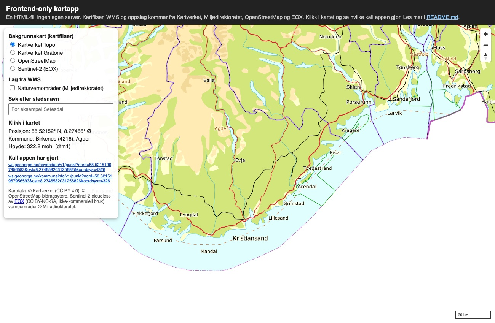
2. Frontend + backend-API + PostGIS
Et API tar imot forespørsler, spør PostGIS og returnerer f.eks. GeoJSON. Nettleseren får aldri databasepassordet. I virkelige løsninger lages faste endepunkter (/skoler?kommune=4204) eller ferdige verktøy som pg_featureserv eller Supabase. Å sende fri SQL fra nettleseren er kun egnet i undervisning med en lesebruker.
3. 3-lags med kartserver
Presentasjon, logikk og data i hvert sitt lag. Standardtjenester (WMS, WFS, OGC API) lar mange klienter (nettleser, QGIS, andre systemer) bruke samme tjeneste. Slik er Geonorges tjenester bygget. Kostnad: du må selv drifte, oppdatere og sikre serveren.
4. Caching og tile-pyramider
Ferdige fliser for alle zoomnivåer (en pyramide) i cache eller CDN slipper serveren å tegne på nytt. Raskt og billig, men best når dataene sjelden endres. Legges som regel oppå mønster 2 eller 3.
14.2 Velg arkitektur
| Spørsmål | Peker mot |
|---|---|
| Åpne data som sjelden endres? | Frontend-only (evt. cloud native) |
| Må noen endre data, eller noe holdes hemmelig? | Frontend + backend-API |
| Skal mange ulike systemer bruke tjenesten? | 3-lags med standardtjenester |
| Mange brukere eller tunge kart? | Legg til caching |
14.3 Stack-valg når en agent skal bygge
| Kriterium | Frontend + backend (kompilert) | Én HTML-fil |
|---|---|---|
| Deploy | Bygg-steg og server/container | Kopier filen til statisk vert |
| Vedlikehold | Mange avhengigheter | Få avhengigheter, all kode i én fil |
| Sikkerhet | Nøkler/passord kan holdes på server | Alt synlig; aldri hemmelige nøkler |
| Datamengde | Store data via database | Små data eller skybaserte formater |
| Hvem kan endre koden? | Utviklere | Alle som kan lese HTML, også agenten |
Den enkleste løsningen som oppfyller kravene vinner. Så snart du trenger å skrive data, skjule en nøkkel eller styre tilgang, trenger du backend.
15. KI-agenter og geografisk IT
- En KI-agent er en språkmodell som resonnerer, bruker verktøy og jobber i en løkke: planlegge, handle, observere, justere.
- Agenter kan lite på egen hånd: feil CRS, lange feilkjeder og hallusinering er typiske fallgruver.
- Fire nivåer for å gi agenten mer: prompt engineering → instruksjoner → skills → MCP.
- Agenten er en rask praktikant: du må kunne kontrollere resultatet.
15.1 Hva er en KI-agent?
En KI-agent er en språkmodell (LLM) som kan resonnere, bruke verktøy og jobbe i en løkke: 1) resonnering («hva trenger jeg?»), 2) verktøykall (kjør kode, kall API eller MCP-server), 3) observasjon (resultat eller feilmelding). Resultatet går tilbake til modellen til oppgaven er løst. Hver runde gir ny informasjon, så agenten kan oppdage og rette egne feil, men en feil tidlig i løkken kan også forplante seg.
Eksempel: «Jeg trenger kommunegrensene» → agenten henter fra Geonorge og leser inn med geopandas → resultatet viser at CRS mangler → neste runde: sjekk og sett CRS.
15.2 Hva agenter er gode på, og hvor det går galt
| Godt egnet | Typiske feil |
|---|---|
| Skrive og forklare spatial SQL | Koordinatsystem: buffer i grader i stedet for meter; blanding av 4326 og UTM |
| GDAL-kommandoer og små geopandas-skript | Oppdiktede lag og kolonner |
| Prototype en kartapp raskt | Utdaterte API-er (kode mot eldre bibliotekversjon) |
| Konvertere og rydde data | Stille feil: kjører uten feilmelding, men resultatet er feil |
| Forklare ukjent kode og feilmeldinger | Overdesign: tre lag og rammeverk der én HTML-fil holdt |
Eksempel: MapLibre GL JS fra versjon 6 finnes bare som ES-modul. Agenter trent på eldre eksempler skriver ofte <script src="maplibre-gl.js">, og kartet vises aldri.
Forskere har laget tester for dette: GeoBenchX tester LLM-er på flertrinns GIS-oppgaver, inkludert oppgaver som ikke kan løses, for å se om modellen finner opp et svar (typiske feil: misforståtte geometriske forhold, utdatert kunnskap, ineffektiv databehandling). GeoHaluBench måler geografiske hallusinasjoner hos 20 modeller, og GISAgentBench bruker oppgaver fra praktisk GIS-arbeid.
KI-hallusinering/gemma4-hallusinering.png er et skjermbilde der modellen gemma4:31b-cloud får spørsmålet «Hvilke kommuner grenser til Kristiansand?» (en av utforskningsideene på Canvas). Modellen resonnerer om at Søgne ble slått sammen med Kristiansand i 2020, men svarer med bare Vennesla, Iveland, Birkenes og Lindesnes, og utelater blant annet Lillesand. Svaret høres troverdig ut, men må kontrolleres mot kartdata (f.eks. en romlig kobling mot kommunegrenser fra Geonorge).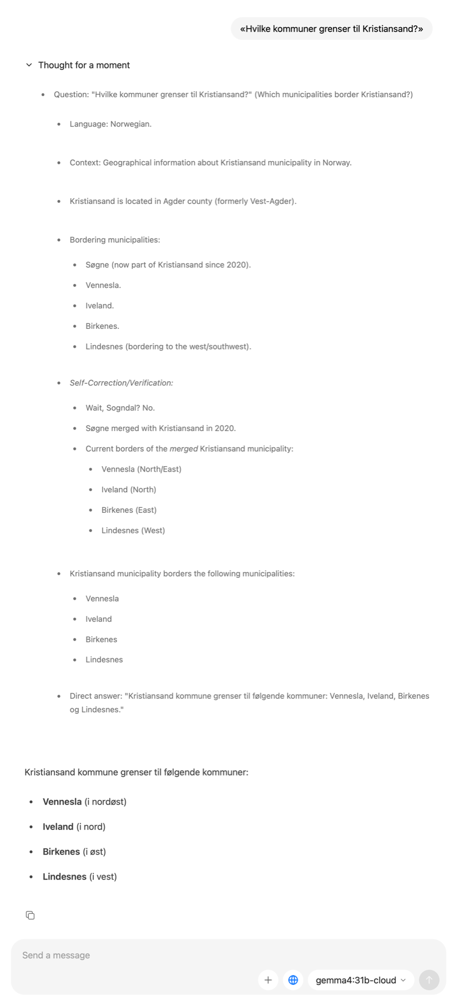
15.3 Fra prompt til MCP
Start nederst og bygg oppover når oppgaven krever det:
| Nivå | Hva | Geo-eksempel | Bruk når |
|---|---|---|---|
| Prompt engineering | Formulering: rolle, kontekst, formatkrav, eksempler | «Lag et GeoJSON-punkt for Kristiansand i [lengdegrad, breddegrad] og forklar CRS.» | Enkeltoppgaver og utforsking |
| Instruksjoner | Faste regler (systemprompt, AGENTS.md/CLAUDE.md) | «Svar på norsk. Bruk EPSG:25832/25833 for norske data. Si fra hvis du er usikker.» | Du gjentar de samme reglene |
| Skills | Mappe med SKILL.md (+ skript/referanser) som lastes ved behov; åpent format (agentskills.io) | Fargeskala-skillen fra demoen «Fargeskalaer» | Fagkunnskap og arbeidsmetoder modellen mangler |
| MCP | Model Context Protocol: åpen protokoll som kobler agenten til eksterne verktøy og data | Allemannsdata.com sin MCP-server for geografi og natur | Live data eller handlinger i andre systemer |
Eksempel på en skill
---
name: norsk-geodata
description: Bruk når oppgaven gjelder norske geodata, koordinatsystemer,
Geonorge-tjenester eller tematiske kart.
---
# Regler
- GeoJSON bruker alltid [lengdegrad, breddegrad].
- Beregn avstand og areal i et projisert system (EPSG:25832/25833)
eller geodetisk. Aldri i grader.
- Hent lagnavn og parametere fra GetCapabilities. Gjett aldri URL-er.
- Hvis et datasett ikke finnes: si det, ikke finn på et svar.
- Tematiske kart: normaliser verdiene og bruk en sekvensiell fargeskala.Agenten ser først bare navn og beskrivelse og laster resten ved behov. Formatet ble opprinnelig utviklet av Anthropic og støttes av flere agentverktøy.
15.4 Slik styrer du en agent
- Gi kontekst i en instruksjonsfil (
AGENTS.md/CLAUDE.md): versjoner, hva som ikke skal gjøres, hvordan resultatet testes. Eksempel fra MapLibre: «Kun ES-modul; pin eksakt versjon i CDN-URL; moduler lastes ikke fra file://; test at kartet laster (map.on("load")) før levering.» - Gi verktøy og kunnskap: skills og MCP-servere.
- Krev verifisering: be agenten teste selv (kjøre koden, åpne kartet), og gjør egen kontroll: se på kartet, sjekk antall objekter, areal og koordinatsystem.
15.5 Superhelt eller praktikant?
Agenten er en rask og lærevillig praktikant. Den jobber raskt og er sjelden sliten, men tar ikke ansvar for resultatet. Du må kunne nok til å se når svaret er feil, og ha oversikt over datakvalitet og lisenser. Kunnskapen fra de foregående kapitlene (operasjoner, koordinatsystem, lagring, arkitektur, kvalitet) er det som gjør deg i stand til å gi gode oppdrag og kontrollere svarene. KI-bruk i emnet er tillatt og anbefalt, men skal dokumenteres i prosjektoppgaven.
Skill.md og en zip-pakke.Ordliste
- AIS
- Automatic Identification System; sendere skip bruker til å melde posisjon, fart og kurs.
- Aggregering
- Telle/summere objekter per område eller slå områder sammen (dissolve).
- Attributt
- Egenskap knyttet til et geografisk objekt, lagret i tabell.
- Bakgrunnskart
- Ferdig stilt kart (raster eller vektortiler) som legges under egne data.
- Buffer
- Sone av gitt avstand rundt et objekt.
- Choropleth
- Tematisk kart der flater farges etter klasser.
- COG
- Cloud Optimized GeoTIFF; raster som kan leses i utdrag via HTTP.
- Cloud native
- Formater laget for å leses direkte fra objektlagring med range requests.
- CRS
- Coordinate Reference System; koordinatsystem (datum + evt. projeksjon).
- CSW
- Catalogue Service for the Web; OGC-tjeneste for metadatasøk.
- De-facto-standard
- Utbredt praksis uten formell standardisering (XYZ-tiles, MVT, ArcGIS REST).
- Dissolve
- Slå sammen flater som deler en attributtverdi.
- Dot density
- Kart der hver prikk representerer et fast antall enheter.
- DuckDB
- Innebygd analysedatabase med spatial-utvidelse.
- EPSG
- Registeret over koordinatsystemkoder (f.eks. 4326, 25833).
- EUREF89
- Norsk realisering av det europeiske referansesystemet ETRS89; grunnlag for UTM 32/33.
- FKB
- Felles kartdatabase; detaljerte Geovekst-data (FKB-A til D).
- FlatGeobuf
- Binært vektorformat med spatial indeks.
- GDAL / OGR
- Bibliotek og verktøy for lesing og skriving av raster- og vektorformater.
- GeoJSON
- JSON-basert vektorformat (RFC 7946), [lengdegrad, breddegrad].
- GeoPackage
- OGC-standard fildatabase på SQLite (.gpkg).
- GeoParquet
- Kolonnebasert format for vektordata, bygget på Parquet.
- Geonorge
- Norges geodataportal og kartkatalog.
- Geovekst
- Samarbeid om å etablere og forvalte geodata (FKB).
- Graf
- Noder og kanter med kostnad; grunnlag for ruteberegning.
- Heatmap
- Glatt tetthetsflate beregnet fra punkter (kernel density).
- Hallusinering
- At en språkmodell finner opp fakta, datasett, URL-er eller lag som ikke finnes.
- Isokron
- Område man rekker innen en gitt reisetid.
- ISO 19115 / 19157
- Standarder for henholdsvis metadata og datakvalitet.
- Kartogram
- Kart der geografi forvrenges eller forlates slik at størrelsen viser verdien (Dorling).
- Klasse / klassifisering
- Inndeling av verdier i grupper (like intervaller, kvantiler, Jenks).
- MCP
- Model Context Protocol; åpen protokoll som kobler KI-agenter til verktøy og data.
- Metadata
- Data om data: innhold, opphav, kvalitet, lisens, CRS.
- MVT
- Mapbox Vector Tiles; mest brukte vektortileformat.
- NLOD
- Norsk lisens for offentlige data.
- NN2000
- Gjeldende norsk høydesystem.
- NVDB
- Nasjonal vegdatabank.
- OGC
- Open Geospatial Consortium; standardiseringsorgan for geografisk informasjon.
- OGC API
- Moderne REST/JSON-baserte etterfølgere til WMS/WFS m.fl.
- Overlay
- Kombinere to lag (intersection, union, difference …).
- Overture Maps
- Åpne globale kartdata i ett skjema, seks temaer.
- PMTiles
- Hele flispyramiden i én fil, til statisk hosting.
- PostGIS
- Geografisk utvidelse til PostgreSQL.
- Projeksjon
- Matematisk metode for å avbilde jordoverflaten på et plan.
- Raster
- Rutenett av celler med verdier.
- Romlig indeks
- Datastruktur (R-tre, GiST) som gir rask romlig søking.
- Romlig kobling
- Spatial join; koble attributter basert på geografisk relasjon.
- Shapefile
- Eldre ESRI-vektorformat bestående av flere filer.
- Skill
- Mappe med SKILL.md som gir en agent fagkunnskap og arbeidsflyt ved behov.
- SOSI
- Norsk utvekslingsformat for geografiske data fra Kartverket.
- STAC
- SpatioTemporal Asset Catalog; katalogisering av satellittdata.
- Tissots indikatriks
- Sirkler på kartet som viser en projeksjons forvrengning.
- Vektor
- Punkter, linjer og flater med attributter.
- WFS / WMS / WMTS / WCS
- Klassiske OGC-tjenester for henholdsvis vektorobjekter, kartbilder, fliser og raster.
Litteratur og kilder
Pensum
- Rød, J. K. (2023): GIS – Verktøy for å forstå verden, 2. utgave, Fagbokforlaget. Kapittel 1, 2, 3, 4, 7, 16 og 17.
Utvalgte kilder fra Canvas
- Kartverket: Geodataarbeid; Geonorge; data.norge.no; Kartverket: Kjøp kartdata
- ColorBrewer 2.0; Axis Maps (Data Classification)
- OpenStreetMap Wiki: Downloading data; Overture Maps-dokumentasjon
- GDAL: Vector drivers og ogr2ogr; Mapscaping: Shapefiles vs. GeoPackage
- OGC API: ogcapi.ogc.org; OGC Standards
- Cloud-Native Geospatial: guide; PostGIS Introduction (workshop)
- QGIS User Guide; QGIS Training Manual; GeoLibre Tutorials; OSGeo Software projects
- GeoPandas: Getting started; uv-dokumentasjon; MapLibre GL JS
- Agent Skills (agentskills.io); Anthropic: Agent Skills og Prompt engineering; Model Context Protocol; Claude Code: Best practices; GeoBenchX
Tilleggskilder fra nett (brukt i gule felt)
- Geonorge: kodeliste for koordinatsystem
- epsg.io: EPSG:25833; spatialreference.org: EPSG:5973
- Esri ArcGIS Pro: Mercator (viser til Battersby et al. 2014, Implications of Web Mercator and Its Use in Online Mapping, Cartographica 49(2))
- Atlas GIS Basics: Mercator, UTM, Lambert and Friends
- Atlas GIS Basics: Classification Methods; Esri StoryMaps: Data classification for choropleth maps
Merk: Oppføringer uten lenke er titler slik de står i Canvas. Lenkene på selve Canvas-sidene er ikke bevart i den lokale tekstkopien, så slå opp titlene eller bruk Canvas-sidene.
Vedlegg: om kurset
IS-930 Introduksjon til Geografisk IT og Kunstig Intelligens, videreutdanning høst 2026, 2,5 studiepoeng. Heldigitalt (Zoom + Canvas). Emneansvarlig: Alexander S. Nossum.
| Dato | Aktivitet |
|---|---|
| Tirsdag 6. oktober, 09:00–11:00 | Introduksjonswebinar |
| Torsdag 22. oktober, 09:15–13:00 | Samling 1: Introduksjon til geografisk IT (modul 1) |
| Tirsdag 3. november, 09:15–13:00 | Samling 2: Teknologi og databehandling (modul 2) |
| 12. november | Digital veiledning |
| Søndag 15. november, 23:59 | Frist refleksjonsoppgave |
| Tirsdag 17. november, 09:15–13:00 | Samling 3: Analyse og KI (modul 3) |
| 24. november | Digital veiledning |
| Søndag 6. desember, 23:59 | Frist mappeinnlevering |
Vurdering: mappeinnlevering (refleksjonsoppgave + prosjektoppgave/-skisse), bestått/ikke bestått. Vurderingen baseres på om innleveringene samlet viser tilstrekkelig forståelse for geografisk IT og KI, og om prosjektskissen er realistisk og faglig begrunnet; prosjektet trenger ikke gjennomføres. KI-verktøy er tillatt og anbefalt, men bruken skal dokumenteres.
Programvare: Zoom, QGIS (på Mac også GDAL via Homebrew), Google-konto (Colab), Claude Pro anbefalt. Valgfritt: VS Code, Claude Code, Node.js, uv, Cloudflare-konto.